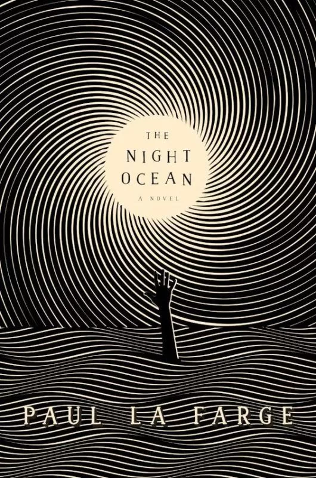
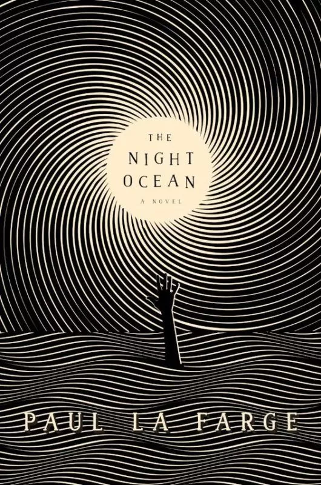

Sobre a Biblioteca
A Biblioteca Estelar, situada em uma colina serena com vista para o mar, era uma joia escondida do mundo
acadêmico. Fundada em 1810 por astrônomos e naturalistas, começou como um pequeno depósito de mapas
estelares e diários de exploração, mas rapidamente se expandiu para abrigar todo tipo de conhecimento
científico.
Seu nome foi escolhido por conta de uma lenda: dizia-se que à noite, as estrelas refletiam na grande cúpula
de vidro no teto da biblioteca, como se o universo estivesse colaborando para iluminar o caminho dos
estudiosos que ali se reuniam. Além disso, a Biblioteca Estelar era conhecida por suas coleções de livros
sobre astronomia, biologia marinha e física teórica.
1945, durante a Segunda Guerra Mundial, ela quase foi destruída por um bombardeio, mas um grupo de
acadêmicos locais arriscou suas vidas para salvar os livros mais valiosos. Desde então, a biblioteca se
tornou um símbolo de resistência ao tempo e ao caos.
Em 2005, a Estelar foi pioneira na introdução de um sistema de inteligência artificial para ajudar os
pesquisadores a encontrar padrões entre documentos históricos e novas descobertas científicas. Esse sistema,
conhecido como "Orion", se tornou quase um curador, ajudando a conectar ideias e estudos que pareciam
desconectados.
Hoje, a Biblioteca Estelar continua a atrair os mais brilhantes cientistas do mundo, oferecendo não só
livros, mas uma experiência de descoberta cósmica.
 A pequena sereia
A pequena sereia Como eu era antes de você
Como eu era antes de você
 
